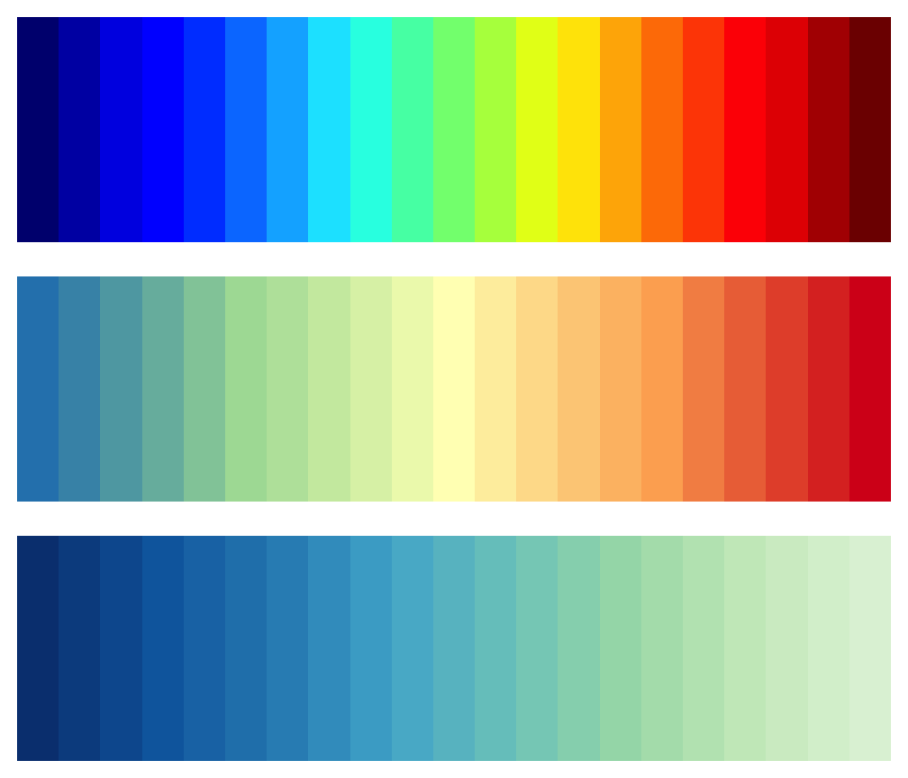

palettes.RdFunctions for creating a vector of colours from pre-specified palettes.
jet.colors(n)
spectral.colors(n)
bl2gr.colors(n)a numerical value specifying the number of colours in the palette.
jet.colors() creates a palette of colours which tend to have high brightness and not uniform luminance. Furthermore, the brightest colours, yellow and cyan, are used for intermediate data values, and this has the effect of emphasizing uninteresting (and arbitrary) values while de-emphasizing the extremes. For these reasons this popular palette is not recommended.spectral.colors() creates a palette based on ColorBrewer https://colorbrewer2.org, so the resulting colours have a much uniform luminance.
The bl2gr.colors() palette returns a palette of colours from blue to green.
Returns a character vector of colours encoded in hexadecimal values.
jet.colors(9)
#> [1] "#00007F" "#0000FF" "#007FFF" "#00FFFF" "#7FFF7F" "#FFFF00" "#FF7F00"
#> [8] "#FF0000" "#7F0000"
spectral.colors(9)
#> [1] "#2B83BA" "#6BB0AF" "#ABDDA4" "#D4EEB1" "#FFFFBF" "#FED690" "#FDAE61"
#> [8] "#EA633E" "#D7191C"
bl2gr.colors(9)
#> [1] "#073F80" "#0862A6" "#2582B9" "#42A4CB" "#67BFCB" "#8DD2BE" "#B1E0B8"
#> [8] "#CEECC7" "#DFF2DA"
par(mfrow = c(3,1), mar = c(1,1,1,1))
n = 21
image(1:21, 1, as.matrix(1:21), col = jet.colors(21),
ylab = "", xlab = "", xaxt = "n", yaxt = "n", bty = "n")
image(1:21, 1, as.matrix(1:21), col = spectral.colors(21),
ylab = "", xlab = "", xaxt = "n", yaxt = "n", bty = "n")
image(1:21, 1, as.matrix(1:21), col = bl2gr.colors(21),
ylab = "", xlab = "", xaxt = "n", yaxt = "n", bty = "n")
